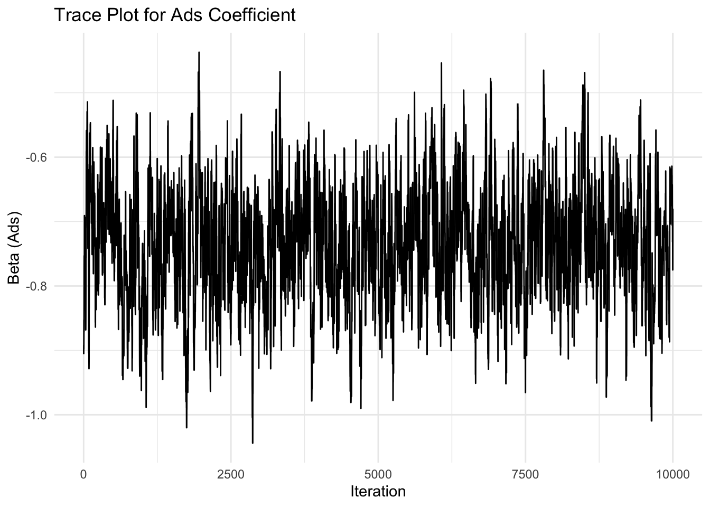
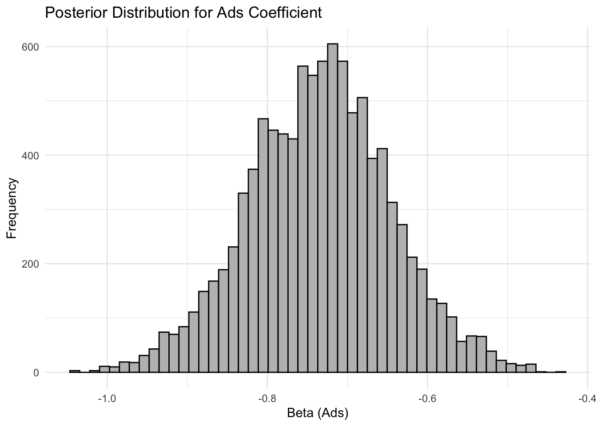

# set seed for reproducibility
set.seed(123)
# define attributes
brand <- c("N", "P", "H") # Netflix, Prime, Hulu
ad <- c("Yes", "No")
price <- seq(8, 32, by=4)
# generate all possible profiles
profiles <- expand.grid(
brand = brand,
ad = ad,
price = price
)
m <- nrow(profiles)
# assign part-worth utilities (true parameters)
b_util <- c(N = 1.0, P = 0.5, H = 0)
a_util <- c(Yes = -0.8, No = 0.0)
p_util <- function(p) -0.1 * p
# number of respondents, choice tasks, and alternatives per task
n_peeps <- 100
n_tasks <- 10
n_alts <- 3
# function to simulate one respondent’s data
sim_one <- function(id) {
datlist <- list()
# loop over choice tasks
for (t in 1:n_tasks) {
# randomly sample 3 alts (better practice would be to use a design)
dat <- cbind(resp=id, task=t, profiles[sample(m, size=n_alts), ])
# compute deterministic portion of utility
dat$v <- b_util[dat$brand] + a_util[dat$ad] + p_util(dat$price) |> round(10)
# add Gumbel noise (Type I extreme value)
dat$e <- -log(-log(runif(n_alts)))
dat$u <- dat$v + dat$e
# identify chosen alternative
dat$choice <- as.integer(dat$u == max(dat$u))
# store task
datlist[[t]] <- dat
}
# combine all tasks for one respondent
do.call(rbind, datlist)
}
# simulate data for all respondents
conjoint_data <- do.call(rbind, lapply(1:n_peeps, sim_one))
# remove values unobservable to the researcher
conjoint_data <- conjoint_data[ , c("resp", "task", "brand", "ad", "price", "choice")]
# clean up
rm(list=setdiff(ls(), "conjoint_data"))Multinomial Logit Model
This assignment expores two methods for estimating the MNL model: (1) via Maximum Likelihood, and (2) via a Bayesian approach using a Metropolis-Hastings MCMC algorithm.
1. Likelihood for the Multi-nomial Logit (MNL) Model
Suppose we have \(i=1,\ldots,n\) consumers who each select exactly one product \(j\) from a set of \(J\) products. The outcome variable is the identity of the product chosen \(y_i \in \{1, \ldots, J\}\) or equivalently a vector of \(J-1\) zeros and \(1\) one, where the \(1\) indicates the selected product. For example, if the third product was chosen out of 3 products, then either \(y=3\) or \(y=(0,0,1)\) depending on how we want to represent it. Suppose also that we have a vector of data on each product \(x_j\) (eg, brand, price, etc.).
We model the consumer’s decision as the selection of the product that provides the most utility, and we’ll specify the utility function as a linear function of the product characteristics:
\[ U_{ij} = x_j'\beta + \epsilon_{ij} \]
where \(\epsilon_{ij}\) is an i.i.d. extreme value error term.
The choice of the i.i.d. extreme value error term leads to a closed-form expression for the probability that consumer \(i\) chooses product \(j\):
\[ \mathbb{P}_i(j) = \frac{e^{x_j'\beta}}{\sum_{k=1}^Je^{x_k'\beta}} \]
For example, if there are 3 products, the probability that consumer \(i\) chooses product 3 is:
\[ \mathbb{P}_i(3) = \frac{e^{x_3'\beta}}{e^{x_1'\beta} + e^{x_2'\beta} + e^{x_3'\beta}} \]
A clever way to write the individual likelihood function for consumer \(i\) is the product of the \(J\) probabilities, each raised to the power of an indicator variable (\(\delta_{ij}\)) that indicates the chosen product:
\[ L_i(\beta) = \prod_{j=1}^J \mathbb{P}_i(j)^{\delta_{ij}} = \mathbb{P}_i(1)^{\delta_{i1}} \times \ldots \times \mathbb{P}_i(J)^{\delta_{iJ}}\]
Notice that if the consumer selected product \(j=3\), then \(\delta_{i3}=1\) while \(\delta_{i1}=\delta_{i2}=0\) and the likelihood is:
\[ L_i(\beta) = \mathbb{P}_i(1)^0 \times \mathbb{P}_i(2)^0 \times \mathbb{P}_i(3)^1 = \mathbb{P}_i(3) = \frac{e^{x_3'\beta}}{\sum_{k=1}^3e^{x_k'\beta}} \]
The joint likelihood (across all consumers) is the product of the \(n\) individual likelihoods:
\[ L_n(\beta) = \prod_{i=1}^n L_i(\beta) = \prod_{i=1}^n \prod_{j=1}^J \mathbb{P}_i(j)^{\delta_{ij}} \]
And the joint log-likelihood function is:
\[ \ell_n(\beta) = \sum_{i=1}^n \sum_{j=1}^J \delta_{ij} \log(\mathbb{P}_i(j)) \]
2. Simulate Conjoint Data
We will simulate data from a conjoint experiment about video content streaming services. We elect to simulate 100 respondents, each completing 10 choice tasks, where they choose from three alternatives per task. For simplicity, there is not a “no choice” option; each simulated respondent must select one of the 3 alternatives.
Each alternative is a hypothetical streaming offer consistent of three attributes: (1) brand is either Netflix, Amazon Prime, or Hulu; (2) ads can either be part of the experience, or it can be ad-free, and (3) price per month ranges from $4 to $32 in increments of $4.
The part-worths (ie, preference weights or beta parameters) for the attribute levels will be 1.0 for Netflix, 0.5 for Amazon Prime (with 0 for Hulu as the reference brand); -0.8 for included adverstisements (0 for ad-free); and -0.1*price so that utility to consumer \(i\) for hypothethical streaming service \(j\) is
\[ u_{ij} = (1 \times Netflix_j) + (0.5 \times Prime_j) + (-0.8*Ads_j) - 0.1\times Price_j + \varepsilon_{ij} \]
where the variables are binary indicators and \(\varepsilon\) is Type 1 Extreme Value (ie, Gumble) distributed.
The following code provides the simulation of the conjoint data.
Note
3. Preparing the Data for Estimation
The “hard part” of the MNL likelihood function is organizing the data, as we need to keep track of 3 dimensions (consumer \(i\), covariate \(k\), and product \(j\)) instead of the typical 2 dimensions for cross-sectional regression models (consumer \(i\) and covariate \(k\)). The fact that each task for each respondent has the same number of alternatives (3) helps. In addition, we need to convert the categorical variables for brand and ads into binary variables.
# Load necessary libraries
library(tidyverse)── Attaching core tidyverse packages ──────────────────────── tidyverse 2.0.0 ──
✔ dplyr 1.1.4 ✔ readr 2.1.5
✔ forcats 1.0.0 ✔ stringr 1.5.1
✔ ggplot2 3.5.2 ✔ tibble 3.2.1
✔ lubridate 1.9.4 ✔ tidyr 1.3.1
✔ purrr 1.0.4
── Conflicts ────────────────────────────────────────── tidyverse_conflicts() ──
✖ dplyr::filter() masks stats::filter()
✖ dplyr::lag() masks stats::lag()
ℹ Use the conflicted package (<http://conflicted.r-lib.org/>) to force all conflicts to become errors# Read the data
conjoint_data <- read_csv("conjoint_data.csv")Rows: 3000 Columns: 6
── Column specification ────────────────────────────────────────────────────────
Delimiter: ","
chr (2): brand, ad
dbl (4): resp, task, choice, price
ℹ Use `spec()` to retrieve the full column specification for this data.
ℹ Specify the column types or set `show_col_types = FALSE` to quiet this message.# Preview structure
glimpse(conjoint_data)Rows: 3,000
Columns: 6
$ resp <dbl> 1, 1, 1, 1, 1, 1, 1, 1, 1, 1, 1, 1, 1, 1, 1, 1, 1, 1, 1, 1, 1, …
$ task <dbl> 1, 1, 1, 2, 2, 2, 3, 3, 3, 4, 4, 4, 5, 5, 5, 6, 6, 6, 7, 7, 7, …
$ choice <dbl> 1, 0, 0, 0, 1, 0, 0, 1, 0, 0, 0, 1, 1, 0, 0, 1, 0, 0, 0, 1, 0, …
$ brand <chr> "N", "H", "P", "N", "P", "N", "P", "H", "N", "P", "P", "P", "N"…
$ ad <chr> "Yes", "Yes", "Yes", "Yes", "Yes", "Yes", "No", "Yes", "No", "N…
$ price <dbl> 28, 16, 16, 32, 16, 24, 8, 24, 24, 28, 12, 24, 20, 28, 16, 12, …# Convert to factors and set base categories
conjoint_data <- conjoint_data %>%
mutate(
brand = factor(brand, levels = c("H", "N", "P")), # H = base
ad = factor(ad, levels = c("No", "Yes")) # No = base
)
# Create model matrix: brandN, brandP, adYes, price (drop intercept)
X <- model.matrix(~ brand + ad + price, data = conjoint_data)[, -1]
# Outcome variable: 1 if chosen, 0 otherwise
Y <- conjoint_data$choice
# Optional: Track respondent-task combinations
id_task_pairs <- paste(conjoint_data$resp, conjoint_data$task)
# Preview column names to confirm
colnames(X)[1] "brandN" "brandP" "adYes" "price" 4. Estimation via Maximum Likelihood
# Log-likelihood function for MNL
mnl_loglik <- function(beta, X, choice_vector) {
# Compute utility
utility <- X %*% beta
# Reshape into matrix (3 alternatives per task)
u_matrix <- matrix(utility, ncol = 3, byrow = TRUE)
# Softmax probabilities
exp_u <- exp(u_matrix)
probs <- exp_u / rowSums(exp_u)
# Reshape choices
choice_matrix <- matrix(choice_vector, ncol = 3, byrow = TRUE)
# Extract probabilities of chosen alternatives
chosen_probs <- rowSums(probs * choice_matrix)
# Return negative log-likelihood
return(-sum(log(chosen_probs)))
}# Starting values for 4 parameters
start_vals <- rep(0, ncol(X)) # should be 4: brandN, brandP, adYes, price
# Run optimization
mle_results <- optim(
par = start_vals,
fn = mnl_loglik,
X = X,
choice_vector = Y,
method = "BFGS",
hessian = TRUE
)# Extract estimated coefficients
beta_hat <- mle_results$par
# Compute variance-covariance matrix from Hessian
hessian <- mle_results$hessian
vcov_mat <- solve(hessian)
se_hat <- sqrt(diag(vcov_mat))
# Confidence intervals
ci_lower <- beta_hat - 1.96 * se_hat
ci_upper <- beta_hat + 1.96 * se_hatlibrary(tibble)
library(gt)
results_table <- tibble(
Parameter = c("Netflix", "Prime", "Ads", "Price"),
Estimate = round(beta_hat, 4),
Std_Error = round(se_hat, 4),
CI_Lower = round(ci_lower, 4),
CI_Upper = round(ci_upper, 4)
)
results_table %>%
gt() %>%
tab_header(title = "MLE Estimates and 95% Confidence Intervals for MNL Model")| MLE Estimates and 95% Confidence Intervals for MNL Model | ||||
|---|---|---|---|---|
| Parameter | Estimate | Std_Error | CI_Lower | CI_Upper |
| Netflix | 0.9412 | 0.1110 | 0.7236 | 1.1588 |
| Prime | 0.5016 | 0.1111 | 0.2839 | 0.7194 |
| Ads | -0.7320 | 0.0878 | -0.9041 | -0.5599 |
| Price | -0.0995 | 0.0063 | -0.1119 | -0.0871 |
Netflix and Prime are alternative-specific constants (ASCs) for those services relative to a base option (likely another streaming service or “no choice”). Ads and Price are attribute variables affecting utility.
Netflix (0.9412) and Prime (0.5016) have positive coefficients, indicating higher utility/preference compared to the base. Ads (-0.7320) has a negative effect, showing users dislike ads. Price (-0.0995) also has a negative effect, indicating demand decreases with price.
All 95% CIs do not cross zero, meaning the estimates are statistically significant.
5. Estimation via Bayesian Methods
log_prior <- function(beta) {
# N(0, 5^2) priors for first 3 (brandN, brandP, adYes)
lp1 <- sum(dnorm(beta[1:3], mean = 0, sd = 5, log = TRUE))
# N(0, 1^2) prior for price
lp2 <- dnorm(beta[4], mean = 0, sd = 1, log = TRUE)
return(lp1 + lp2)
}
log_posterior <- function(beta, X, Y) {
return(-mnl_loglik(beta, X, Y) + log_prior(beta)) # reuse your MLE log-likelihood
}# Define log-posterior function
log_posterior <- function(beta, X, Y) {
return(-mnl_loglik(beta, X, Y) + log_prior(beta)) # reuse your MLE log-likelihood
}
# Metropolis-Hastings sampler
set.seed(123)
n_iter <- 11000
beta_dim <- ncol(X)
samples <- matrix(NA, nrow = n_iter, ncol = beta_dim)
# Starting values: 0s
beta_current <- rep(0, beta_dim)
logpost_current <- log_posterior(beta_current, X, Y)
# Proposal SDs: 0.05 for binary vars, 0.005 for price
proposal_sds <- c(0.05, 0.05, 0.05, 0.005)
for (i in 1:n_iter) {
# Propose new beta from normal random walk
beta_proposal <- beta_current + rnorm(beta_dim, mean = 0, sd = proposal_sds)
# Calculate log-posterior at proposal
logpost_proposal <- log_posterior(beta_proposal, X, Y)
# Acceptance probability (in log-space)
log_accept_ratio <- logpost_proposal - logpost_current
if (log(runif(1)) < log_accept_ratio) {
beta_current <- beta_proposal
logpost_current <- logpost_proposal
}
samples[i, ] <- beta_current
}# Remove burn-in and summarize posterior
burn_in <- 1000
posterior_samples <- samples[(burn_in + 1):n_iter, ]
# Parameter names
colnames(posterior_samples) <- c("Netflix", "Prime", "Ads", "Price")
# Posterior summaries
posterior_summary <- apply(posterior_samples, 2, function(x) {
c(mean = mean(x), sd = sd(x),
ci_lower = quantile(x, 0.025),
ci_upper = quantile(x, 0.975))
})
posterior_summary <- t(posterior_summary)
round(posterior_summary, 4) mean sd ci_lower.2.5% ci_upper.97.5%
Netflix 0.9263 0.1120 0.7170 1.1503
Prime 0.4883 0.1142 0.2689 0.7065
Ads -0.7346 0.0892 -0.9148 -0.5552
Price -0.0995 0.0061 -0.1117 -0.0876# Trace plot and histogram for one parameter (e.g., Ads)
library(ggplot2)
df_ads <- data.frame(
iteration = 1:nrow(posterior_samples),
ads_beta = posterior_samples[, "Ads"]
)
# Trace plot
ggplot(df_ads, aes(x = iteration, y = ads_beta)) +
geom_line() +
labs(title = "Trace Plot for Ads Coefficient", y = "Beta (Ads)", x = "Iteration") +
theme_minimal()
# Histogram
ggplot(df_ads, aes(x = ads_beta)) +
geom_histogram(bins = 50, fill = "grey", color = "black") +
labs(title = "Posterior Distribution for Ads Coefficient", x = "Beta (Ads)", y = "Frequency") +
theme_minimal()
6. Discussion
Interpreting the Parameter Estimates
If we did not know the true data-generating process, the posterior results alone would still provide clear insights into preferences:
\(\beta_\text{Netflix} > \beta_\text{Prime}\): The posterior means (0.9263 for Netflix vs. 0.4883 for Prime) indicate that respondents, on average, prefer Netflix more than Prime, holding all else constant. Since Hulu is the base brand, both coefficients reflect a positive preference over Hulu, but Netflix is favored most.
\(\beta_\text{price} < 0\): The price coefficient is negative (mean = -0.0995), indicating that as price increases, the likelihood of an option being chosen decreases—this is economically sensible and matches standard demand behavior.
\(\beta_\text{Ads} < 0\): A strong negative coefficient for ads (-0.7346) indicates users strongly prefer ad-free experiences. The histogram shows most posterior mass lies below zero, with a narrow credible interval, confirming high certainty.
These results, even without knowing the simulation setup, provide interpretable and behaviorally reasonable conclusions. Also, the Bayesian credible intervals closely match the MLE confidence intervals, suggesting robustness of the findings to different estimation approaches.
Multi-level (Hierarchical) Model
Our current model assumes homogeneous preferences, with a single set of coefficients shared by all respondents. However, real-world consumers often exhibit preference heterogeneity.
To address this, a multi-level or hierarchical MNL model would be appropriate. In such models:
- Each individual 𝑖 has their own vector of part-worths 𝛽𝑖∼𝑁(𝜇,Σ)
- The population-level parameters 𝜇 and Σ capture the mean and variation in preferences across the sample
To simulate data for a hierarchical model:
- Draw a unique 𝛽𝑖 for each individual from a multivariate normal distribution
- Use each 𝛽𝑖 to simulate their choices across tasks
To estimate the model:
- Use Bayesian hierarchical modeling, typically via Gibbs sampling or Metropolis-within-Gibbs
- Alternatively, use simulated maximum likelihood methods (e.g., with Halton sequences)
This would allow richer inference, such as estimating individual-level utilities, segmenting consumers, or personalizing recommendations, which are key advantages in applied marketing analytics.